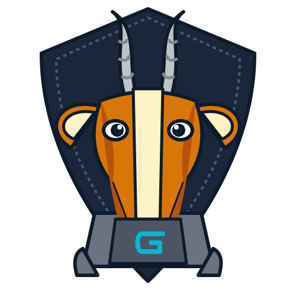

A reusable React IDE component for the Gad language — a dockview workspace (file explorer, multi-language CodeMirror editor, run / format / doc panels) and a full stepping debugger with call stack, locals, watches and a value inspector.
npm install @gad-lang/ide-react
Peer dependencies: react, react-dom,
@mui/material, @mui/icons-material,
dockview-react, @gad-lang/codemirror-gad,
@gad-lang/prism-gad.
The component is backend-agnostic: drive it with any
IdeApi implementation — an HTTP gad ide server, or a
fully in-browser WASM + LocalStorage backend (as the live IDE above does).
import { Ide } from "@gad-lang/ide-react";
<Ide api={myIdeApi} />